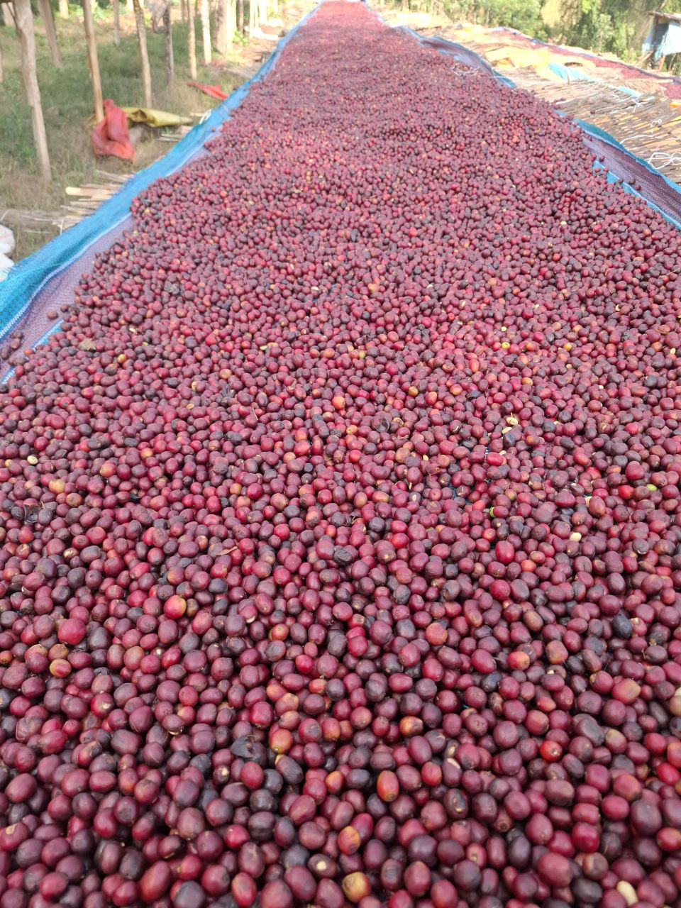
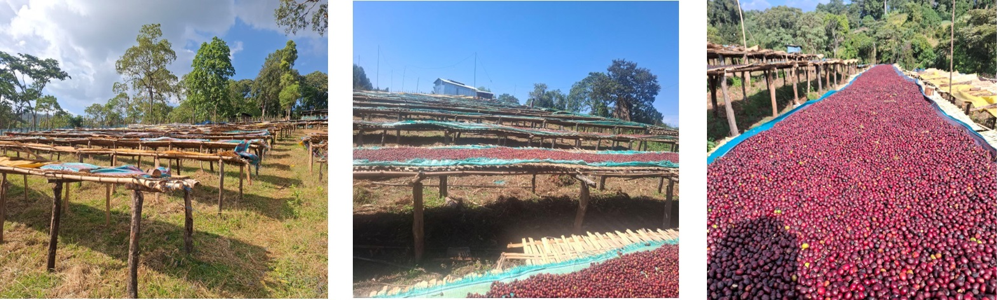

Export-quality Ethiopian Arabica coffee from Guji, Oromia
Our Washed (Fully Washed) Guji coffee offers a clean cup profile with bright acidity, floral aroma, and citrus notes. Ideal for specialty roasters seeking clarity and complexity.

| Origin | Guji Zone, Uraga District, Ethiopia |
|---|---|
| Process | Fully Washed |
| Altitude | 2,200 – 2,650 meters above sea level |
| Grade | Grade 1 / Grade 2 / Grade 3 / Grade 4 |
| Cup Profile | Floral, Citrus, Balanced Acidity |
Our Natural (Sun-Dried) Guji coffee delivers fruity sweetness, berry notes, and a full-bodied cup profile. Perfect for specialty and premium market segments.

| Origin | Guji Zone, Uraga District, Ethiopia |
|---|---|
| Process | Natural / Sun-Dried |
| Altitude | 2,200 – 2,650 meters above sea level |
| Grade | Grade 1 / Grade 2 / Grade 3 / Grade 4 |
| Cup Profile | Berry, Fruity, Full Body |
Contact us for samples, pricing, and export details.
Request Information